Existing functionality, simpler navigation and evidence disclosure. Live synthetic data; after screenshots include an additional acceptance-test case.
Audit, tests and integration guide
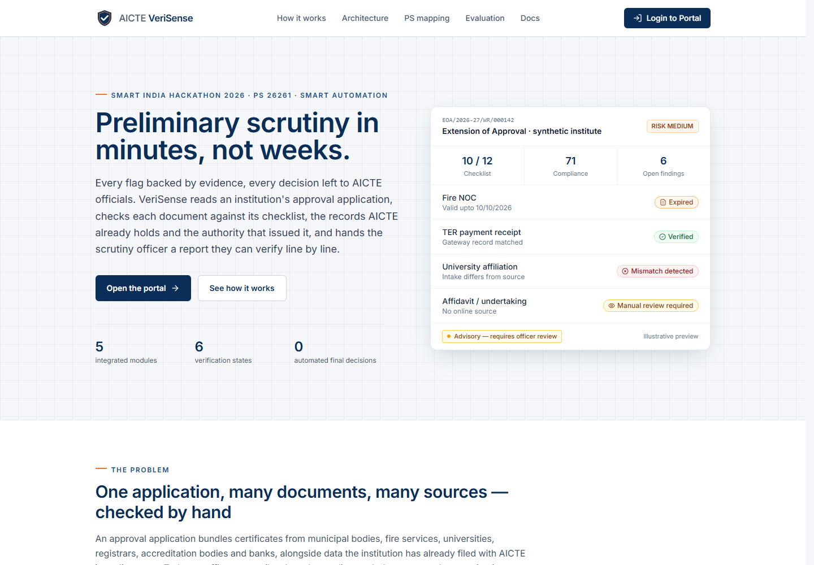
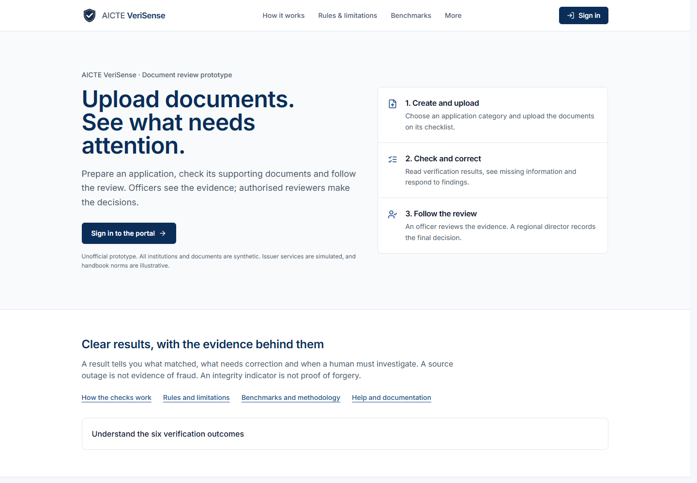
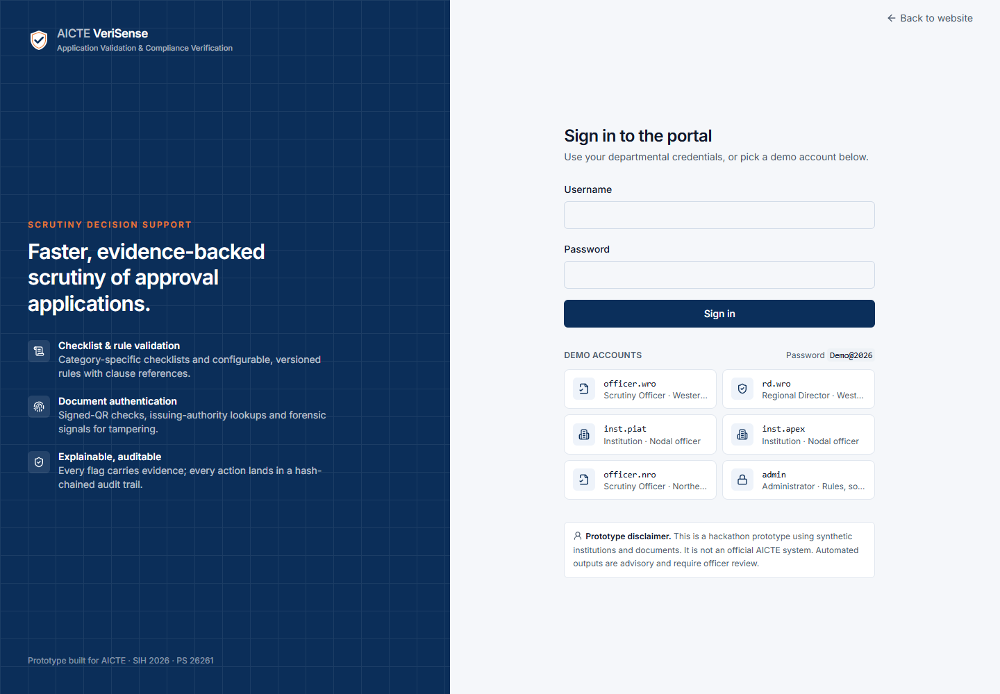
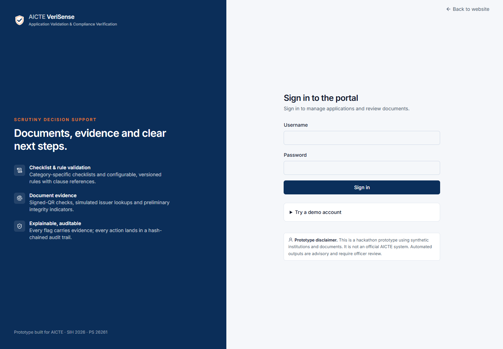
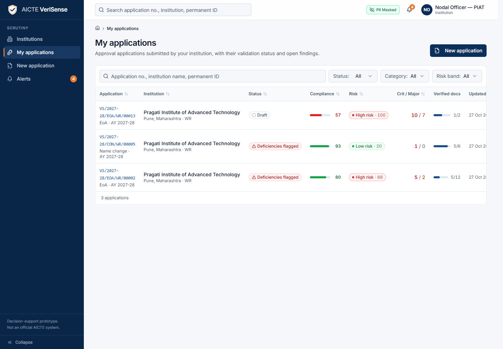
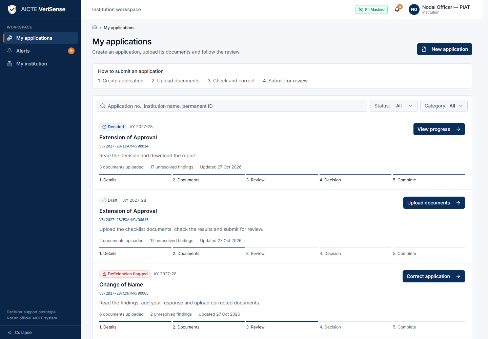
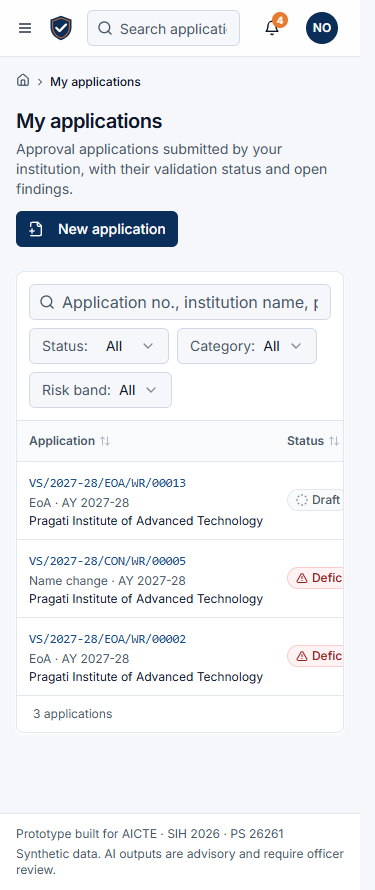
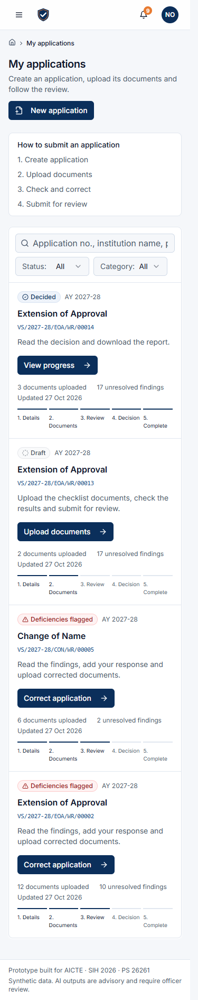
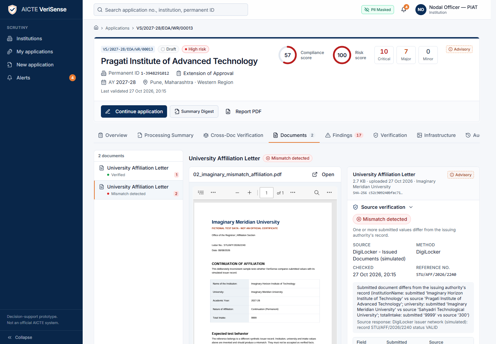
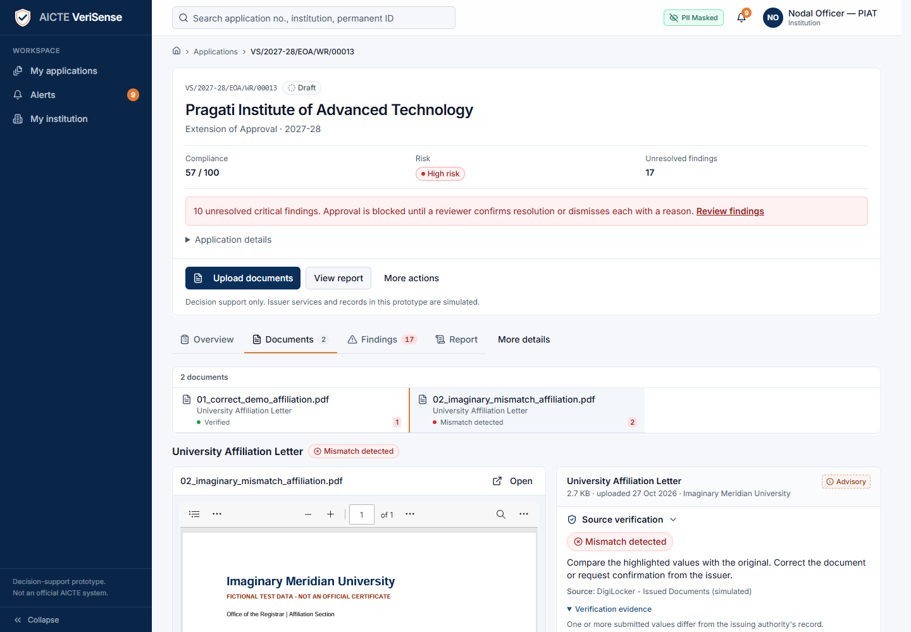
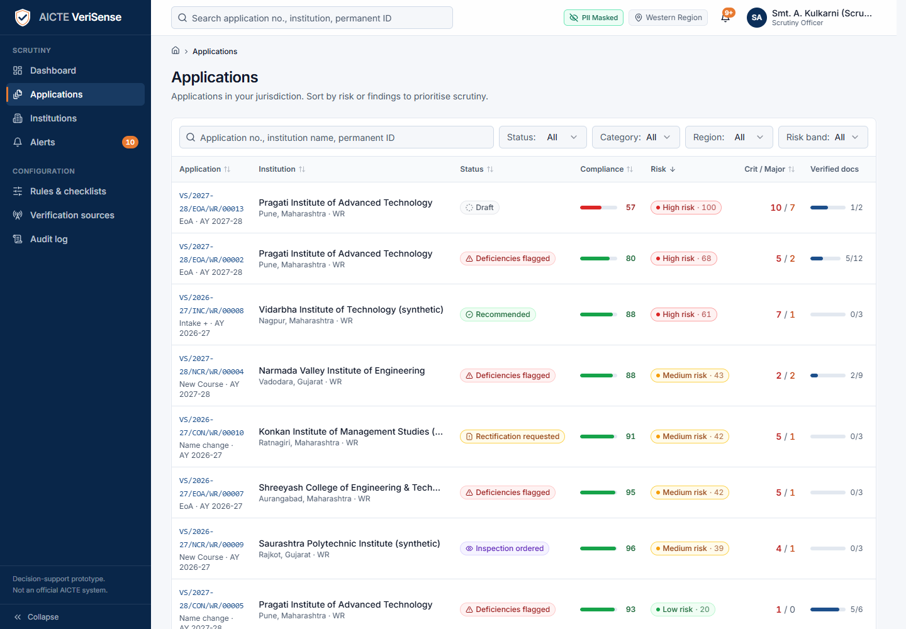
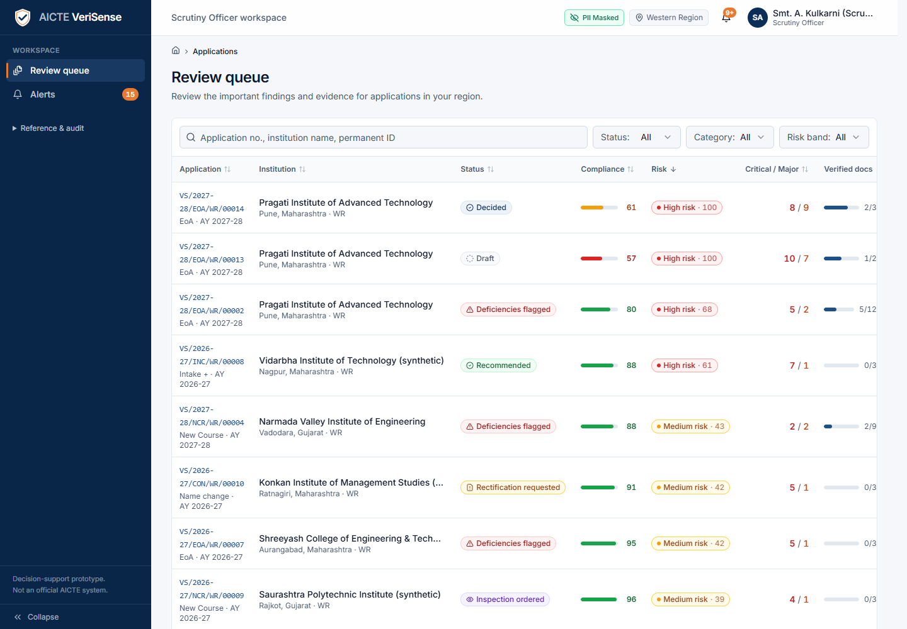
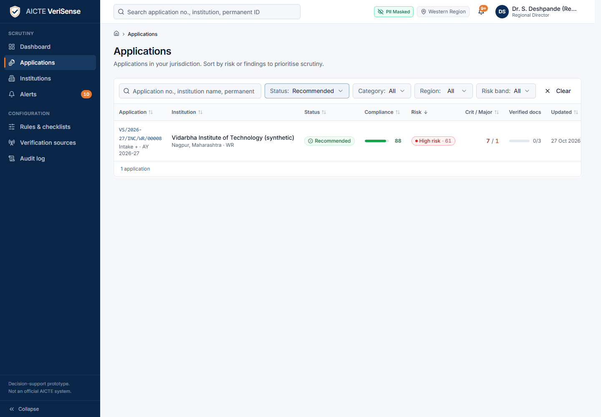
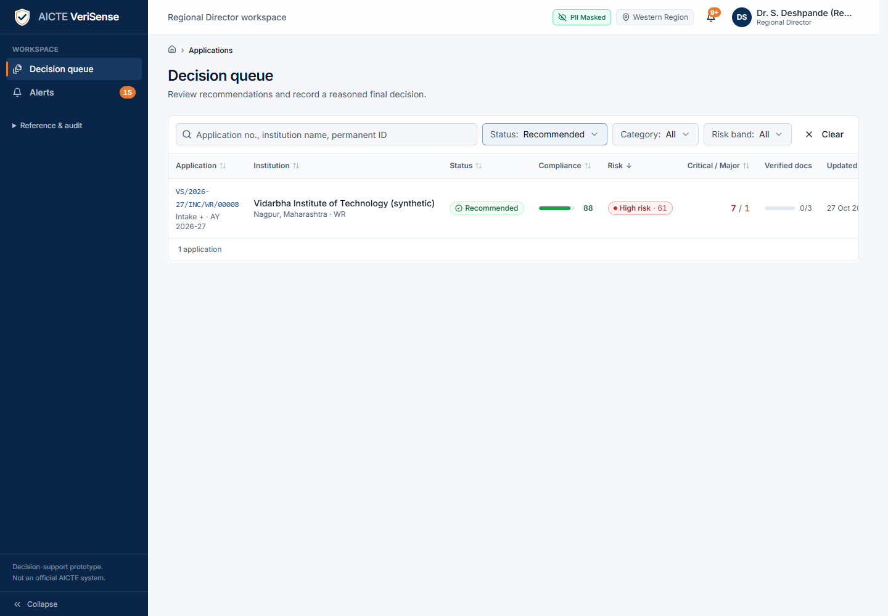
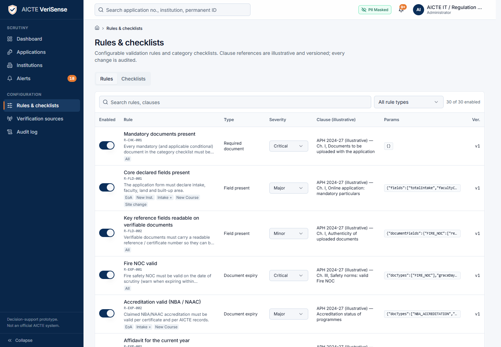
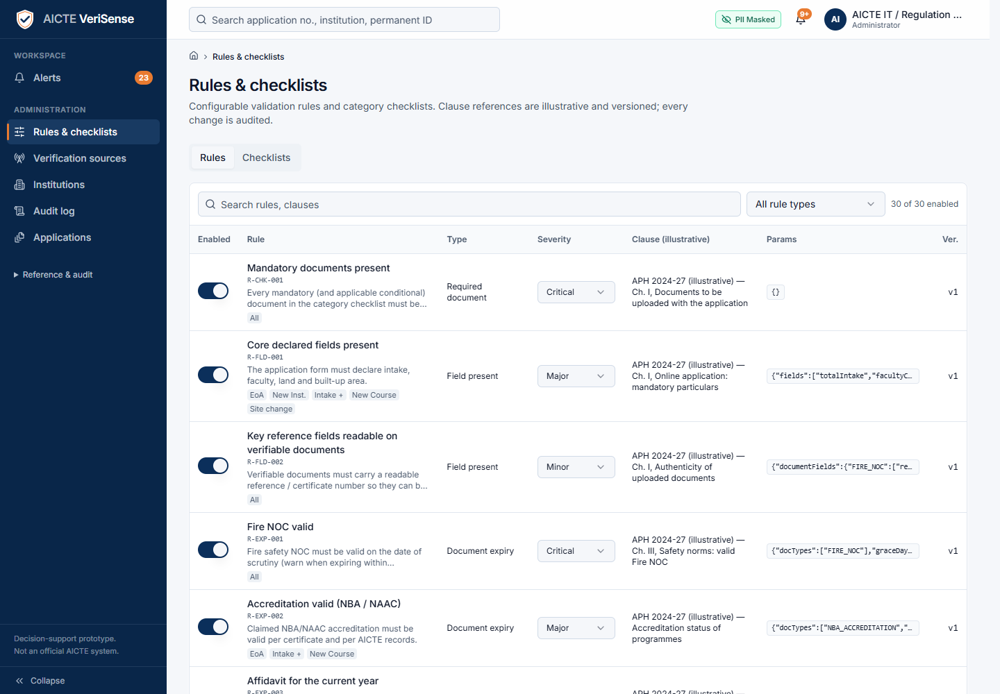